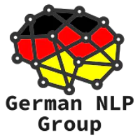
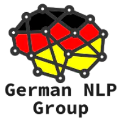

German NLP Group
The German NLP Group is a loose group of NLP enthusiasts who want to advance the field of German natural language processing. We have a special focus on open source. Its current members are:


The German NLP Group is a loose group of NLP enthusiasts who want to advance the field of German natural language processing. We have a special focus on open source. Its current members are:
